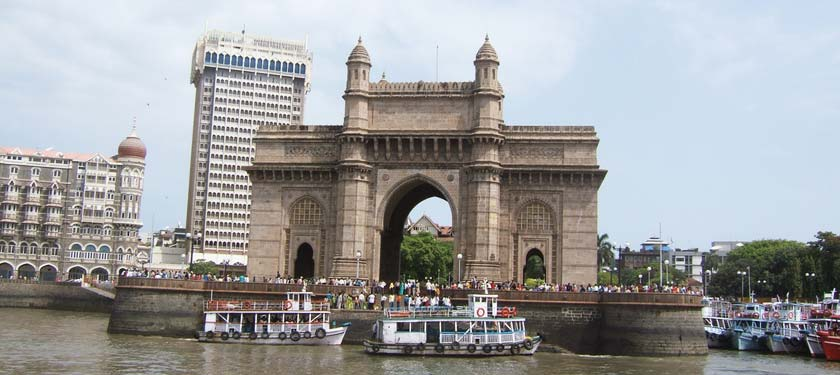
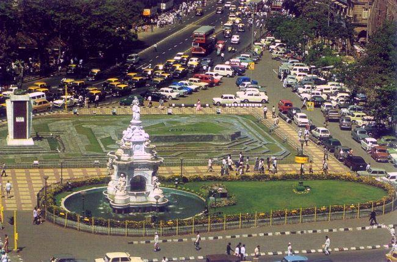
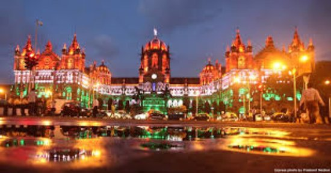
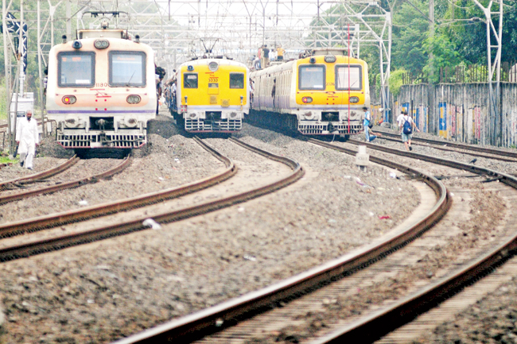
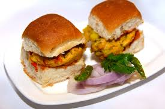

Mumbai (/mʊmˈbaɪ/; also known as Bombay, the official name until 1995) is the capital city of the Indian state of Maharashtra. It is the most populous city in India and the ninth most populous agglomeration in the world, with an estimated city population of 18.4 million. Along with the neighbouring regions of the Mumbai Metropolitan Region, it is one of the most populous urban regions in the world and the second most populous metropolitan area in India, with a population of 20.7 million as of 2011.[11][12] Mumbai lies on the west coast of India and has a deep natural harbour. In 2008, Mumbai was named an alpha world city.[13] It is also the wealthiest city in India,[14] and has the highest GDP of any city in South, West, or Central Asia.[15] Mumbai has the highest number of billionaires and millionaires among all cities in India.[16][17] The seven islands that came to constitute Mumbai were home to communities of fishing colonies.[4] For centuries, the islands were under the control of successive indigenous empires before being ceded to the Portuguese and subsequently to the British East India Company when in 1661 King Charles II married the Portuguese Catherine of Braganza, and as part of her dowry Charles received the ports of Tangier and seven islands of Bombay.[18] During the mid-18th century, Bombay was reshaped by the Hornby Vellard project,[19] which undertook reclamation of the area between the seven islands from the sea.[20] Along with construction of major roads and railways, the reclamation project, completed in 1845, transformed Bombay into a major seaport on the Arabian Sea. Bombay in the 19th century was characterised by economic and educational development. During the early 20th century it became a strong base for the Indian independence movement. Upon India's independence in 1947 the city was incorporated into Bombay State. In 1960, following the Samyukta Maharashtra movement, a new state of Maharashtra was created with Bombay as the capital.[21] Mumbai is the financial, commercial[22] and entertainment capital of India. It is also one of the world's top ten centres of commerce in terms of global financial flow,[23] generating 6.16% of India's GDP[24] and accounting for 25% of industrial output, 70% of maritime trade in India (Mumbai Port Trust and JNPT),[25] and 70% of capital transactions to India's economy.[26][27] The city houses important financial institutions such as the Reserve Bank of India, the Bombay Stock Exchange, the National Stock Exchange of India, the SEBI and the corporate headquarters of numerous Indian companies and multinational corporations. It is also home to some of India's premier scientific and nuclear institutes like BARC, NPCL, IREL, TIFR, AERB, AECI, and the Department of Atomic Energy. The city also houses India's Hindi (Bollywood) and Marathi film and television industry. Mumbai's business opportunities, as well as its potential to offer a higher standard of living,[28] attract migrants from all over India, making the city a melting pot of many communities and cultures.
tourist attractions :
-
Gate way of India

-
Flora Fountain

-
Chatrapatti Shivaji Terminus

WAYS TO TRAVELL:
There many ways to travell in the city of BOMBAY
Main 3 Methods are

Mumbai Local Train ( heart of the city )
VADAPAW (MOST FAMOUS FOOD)